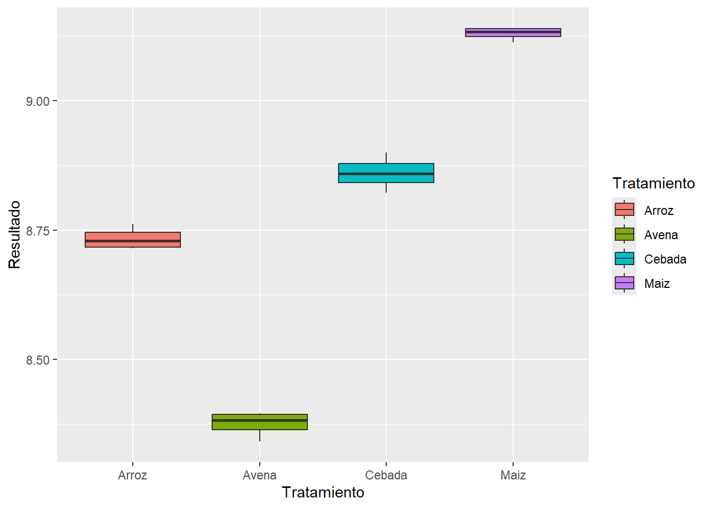

Metodología: El estudio se estructuró a partir de dos diseños experimentales: un Diseño Completamente al Azar para la evaluación de sustratos, y un Diseño de Medidas Repetidas en el Tiempo para la evaluación de la actividad inhibitoria.
5.1.2.3 Diseño 1: Sustratos de cultivo para Penicillum sp.
Se empleó un Diseño Completamente al Azar con los siguientes tratamientos: avena en hojuelas, maíz partido, semillas de cebada y arroz blanco. Se prepararon bolsas de polipropileno con cada sustrato, se inocularon con cinco discos de micelio de Penicillum sp. (0.5 mm de diámetro) y se incubaron de forma aleatorizada a 22 ± 2 °C durante ocho días. El experimento se realizó por quintuplicado, considerando cada bolsa como una repetición.
5.1.2.4 Diseño 2: Evaluación de la actividad inhibitoria
Se implementó un Diseño de Medidas Repetidas en el Tiempo para analizar el efecto de las concentraciones del extracto sobre dos variables de respuesta clave:
Porcentaje de Inhibición del Área de la Lesión (PIAL): Para evaluar la eficacia in vivo.
Porcentaje de Inhibición del Crecimiento Micelial (PICM): Para evaluar la eficacia in vitro.
Las variables independientes fueron las diferentes concentraciones del extracto y los testigos correspondientes, mientras que las variables de respuesta se midieron a lo largo del tiempo para observar la evolución de la inhibición.
Resultados: El maíz partido constituyó el sustrato óptimo para la producción conidial de Penicillium digitatum, alcanzando valores de Log10 9,13 conidios/mL, seguido de la cebada Log10 8,88 conidios/mL (Figura 1).
Figura 1.
Sustratos con Conidios de Penicillium sp.
Nota: Dilución de conidios y sustrato, en solución tween80® 0,01%: Avena (A); Arroz (B); Cebada (C); Maíz Partido (D).
Figura 2. Efecto de los tratamientos in vitro frente al crecmiento de Colletotrichum musae.
Nota: Prueba de inhibición in vitro de Colletotrichum musae, frente a diferentes tratamientos. (A) Testigo negativo; (B) Testigo positivo (Amistar a 60mg/100mL); (C) Extracto de Penicillium sp., al 4%; (D) Extracto de Penicillium sp., al 4,5%; (E) Extracto de Penicillium sp., al 5%; (F) Extracto de Penicillium sp., al 5,5%; (G) Extracto de Penicillium sp., al 6%.
Por otro lado, los ensayos in vivo evidenciaron una mayor eficacia del extracto crudo, donde las concentraciones de 8, 9, 10, 11, 12 y 13% generaron porcentajes de inhibición del área de la lesión (PIAL) de 60, 55, 70, 72, 77 y 80% respectivamente (Figura 3), sugiriendo que Penicillium digitatum podría representar una alternativa viable para el manejo preventivo de la antracnosis del banano.
Figura 3.
Efecto in vivo de bananos infectados con Colletotrichum musae en los tratamientos.
Nota: Experimento in vivo de los bananos infectados con 107 conidios de Colletotrichum musae, frente a tratamientos (A los 7 días de la inoculación). (A) Testigo negativo; (B) Azoxystrobin (Testigo positivo); Extractos de Penicillium sp. a (C) 8%; (D) 9%; (E) 10%; (F) 11%; (G) 12%; (H) 13%.
Para mayor información puede consultar: Mejía-Sarmiento, J. S. (2022). Evaluación de Extracto Crudo de Penicillium sp. para la Inhibición del Crecimiento in vitro e in vivo de Colletotrichum musae (Berk. y M. A. Curtis) Arx. Agente Causal de Antracnosis en Banano [Tesis de pregrado, Universidad de Santander UDES]. Repositorio Institucional UDES. https://repositorio.udes.edu.co/handle/001/8674
5.1.3 Estructura de la base de datos
La base de datos utilizada en este análisis corresponde a los resultados de un experimento agrícola que evalúa el comportamiento de cuatro cultivos diferentes bajo condiciones similares de manejo. La tabla contiene tres columnas principales:
Variable
Descripción
Tratamiento
Tipo de cultivo evaluado. Incluye cuatro niveles: Arroz, Avena, Cebada y Maíz.
Repetición
Número de repetición del tratamiento (del 1 al 4). Permite el análisis estadístico con replicación.
Especificar el directorio que me interesa donde se encuentra la base de datos.
Antes e inciar
R lee / (slash o division) y no el de Windows \
En R, setwd() es una función que significa “set working directory” o “establecer el directorio de trabajo”. Se utiliza para definir la carpeta predeterminada en la que R buscará archivos para leer y donde guardará archivos por defecto.
Por ejemplo: setwd (“D:/OneDrive - Universidad de Santander/Material Docente 2025/CodigoR”“)
Lectura de datos
library(readxl)
Warning: package 'readxl' was built under R version 4.3.3
DCA <-read_excel("C:/Users/coordinador.analitic/OneDrive - Universidad de Santander/Material_Profesoral_2025/CodigoR/DCA2.xlsx")View(DCA)attach(DCA)names(DCA)
El enfoque de ANOVA se basa en comparar dos tipos de variación: por un lado, la variabilidad que se observa entre los distintos grupos, y por otro, la variabilidad que existe dentro de cada grupo individual.
Si al analizar los datos se encuentra que la variación entre los grupos supera notablemente la que ocurre dentro de ellos, es razonable pensar que las diferencias en los promedios reflejan algo más que el azar. En cambio, si la variabilidad interna es más pronunciada, entonces es posible que las diferencias observadas no sean significativas y respondan a variaciones normales del comportamiento de los datos.
Df Sum Sq Mean Sq F value Pr(>F)
Tratamiento 3 1.1794 0.3931 660.4 1.39e-13 ***
Residuals 12 0.0071 0.0006
---
Signif. codes: 0 '***' 0.001 '**' 0.01 '*' 0.05 '.' 0.1 ' ' 1
Interpretación: La prueba ANOVA muestra diferencias significativas entre los tratamientos (p < 0.001). El valor de F (660.4) indica que la variación entre tratamientos es mucho mayor que la variación dentro de los grupos, lo que sugiere que al menos uno de los tratamientos afecta significativamente el resultado.
Modelo Lineal
modelo=lm(Resultado~(Tratamiento))summary(modelo)
Call:
lm(formula = Resultado ~ (Tratamiento))
Residuals:
Min 1Q Median 3Q Max
-0.038397 -0.016205 0.001983 0.012013 0.040116
Coefficients:
Estimate Std. Error t value Pr(>|t|)
(Intercept) 8.73389 0.01220 715.921 < 2e-16 ***
TratamientoAvena -0.35848 0.01725 -20.778 8.93e-11 ***
TratamientoCebada 0.12669 0.01725 7.343 8.94e-06 ***
TratamientoMaiz 0.39630 0.01725 22.970 2.75e-11 ***
---
Signif. codes: 0 '***' 0.001 '**' 0.01 '*' 0.05 '.' 0.1 ' ' 1
Residual standard error: 0.0244 on 12 degrees of freedom
Multiple R-squared: 0.994, Adjusted R-squared: 0.9925
F-statistic: 660.4 on 3 and 12 DF, p-value: 1.393e-13
Interpretación: El modelo lineal confirma que el tratamiento influye significativamente en los resultados (p < 0.001). El tratamiento “Arroz” actúa como referencia, con una media estimada de 8.73. Comparado con este:
Avena presenta una media significativamente menor (–0.36, p < 0.001).
Cebada muestra un aumento moderado (+0.13, p < 0.001).
Maíz tiene el mayor incremento (+0.40, p < 0.001).
El modelo explica el 99.4% de la variabilidad en los datos (R² = 0.994), y el error estándar residual es bajo (0.0244), lo que indica un ajuste excelente.
Gráfico Boxplot
Se toma el Tratamiento para hacer un boxplot utilizando la variable “Resultado”, pero primero se transformar en factor la variable Tratamiento:
library(ggplot2)DCA$Treatamiento<-factor(DCA$Tratamiento) #transformamos una variable númerica en un factor categóricoggplot(DCA, aes(x = Tratamiento, y = Resultado, fill=Tratamiento)) +geom_boxplot()

Interpretación: Las diferencias en las medianas entre tratamientos son claras y consistentes con los resultados del ANOVA y del modelo lineal, lo que sugiere un efecto significativo del tipo de cultivo sobre la variable resultado.
Supuestos del diseño
Normalidad: Para verificar la normalidad de los residuos utilizaremos la prueba de Shapiro-Wilks cuyo script es el siguiente:
shapiro.test(residuals(Anova))
Shapiro-Wilk normality test
data: residuals(Anova)
W = 0.97944, p-value = 0.959
Interpretación: El test de Shapiro-Wilk aplicado a los residuos del modelo ANOVA devuelve un valor de p = 0.959, que es mucho mayor que 0.05. Esto indica que no hay evidencia estadística para rechazar la hipótesis nula de normalidad. Por lo tanto, se concluye que los residuos del modelo siguen una distribución normal, cumpliendo así uno de los supuestos fundamentales del análisis de varianza.
library(car) #Grafico de QQ plotlibrary(carData)library(dplyr)library(purrr)qqPlot(Anova)
[1] 9 12
Interpretación: El gráfico QQ muestra que los residuos estandarizados del modelo ANOVA se alinean adecuadamente con la línea diagonal, lo que indica que su distribución es aproximadamente normal. La mayoría de los puntos se ubican dentro de la banda de confianza, y no se observan desviaciones sistemáticas. Esta gráfica complementa el resultado del test de Shapiro-Wilk (p = 0.959), confirmando que se cumple el supuesto de normalidad de los residuos en el modelo.
Homocedasticidad: Para evaluar el supuesto de homogeneidad de varianzas entre los grupos (homocedasticidad), se aplicará la prueba de Bartlett, la cual es apropiada cuando los datos provienen de poblaciones aproximadamente normales. Esta prueba contrasta la hipótesis nula de igualdad de varianzas frente a la alternativa de varianzas diferentes. El procedimiento se implementa mediante el siguiente script:
bartlett.test(Resultado~Tratamiento, data=DCA)
Bartlett test of homogeneity of variances
data: Resultado by Tratamiento
Bartlett's K-squared = 2.2722, df = 3, p-value = 0.5179
La implementación de esta prueba requiere la carga del paquete agricolae, utilizando el siguiente script. Instalación si es necesario: install.packages(“agricolae”). Carga del paquete: library(agricolae).
library(agricolae)Grupos <-LSD.test(y = Anova, trt ="Tratamiento", group = T, console = T)
Study: Anova ~ "Tratamiento"
LSD t Test for Resultado
Mean Square Error: 0.0005953124
Tratamiento, means and individual ( 95 %) CI
Resultado std r se LCL UCL Min Max
Arroz 8.733890 0.02192214 4 0.01219951 8.707310 8.760471 8.715318 8.762183
Avena 8.375414 0.02519485 4 0.01219951 8.348834 8.401995 8.341039 8.395990
Cebada 8.860578 0.03330518 4 0.01219951 8.833998 8.887159 8.822181 8.900695
Maiz 9.130190 0.01251613 4 0.01219951 9.103609 9.156770 9.113429 9.140539
Q25 Q50 Q75
Arroz 8.717232 8.729030 8.745688
Avena 8.364419 8.382314 8.393309
Cebada 8.842075 8.859719 8.878222
Maiz 9.124249 9.133395 9.139335
Alpha: 0.05 ; DF Error: 12
Critical Value of t: 2.178813
least Significant Difference: 0.03759044
Treatments with the same letter are not significantly different.
Resultado groups
Maiz 9.130190 a
Cebada 8.860578 b
Arroz 8.733890 c
Avena 8.375414 d
Intrepretación: La prueba LSD reveló que los cuatro tratamientos presentan diferencias estadísticamente significativas entre sus medias. El tratamiento Maíz obtuvo el mayor rendimiento promedio, seguido por Cebada, Arroz y Avena, en ese orden descendente.
Grupos<-LSD.test(y = Anova, trt ="Tratamiento", group = F, console = T)
Study: Anova ~ "Tratamiento"
LSD t Test for Resultado
Mean Square Error: 0.0005953124
Tratamiento, means and individual ( 95 %) CI
Resultado std r se LCL UCL Min Max
Arroz 8.733890 0.02192214 4 0.01219951 8.707310 8.760471 8.715318 8.762183
Avena 8.375414 0.02519485 4 0.01219951 8.348834 8.401995 8.341039 8.395990
Cebada 8.860578 0.03330518 4 0.01219951 8.833998 8.887159 8.822181 8.900695
Maiz 9.130190 0.01251613 4 0.01219951 9.103609 9.156770 9.113429 9.140539
Q25 Q50 Q75
Arroz 8.717232 8.729030 8.745688
Avena 8.364419 8.382314 8.393309
Cebada 8.842075 8.859719 8.878222
Maiz 9.124249 9.133395 9.139335
Alpha: 0.05 ; DF Error: 12
Critical Value of t: 2.178813
Comparison between treatments means
difference pvalue signif. LCL UCL
Arroz - Avena 0.3584760 0 *** 0.3208855 0.39606642
Arroz - Cebada -0.1266884 0 *** -0.1642788 -0.08909794
Arroz - Maiz -0.3962994 0 *** -0.4338899 -0.35870901
Avena - Cebada -0.4851644 0 *** -0.5227548 -0.44757392
Avena - Maiz -0.7547754 0 *** -0.7923659 -0.71718499
Cebada - Maiz -0.2696111 0 *** -0.3072015 -0.23202064
Interpretación: todas las diferencias entre tratamientos son altamente significativas (p < 0.001). Esto confirma que ninguno de los tratamientos comparte una media similar.
Study: Anova ~ "Tratamiento"
Scheffe Test for Resultado
Mean Square Error : 0.0005953124
Tratamiento, means
Resultado std r se Min Max Q25 Q50
Arroz 8.733890 0.02192214 4 0.01219951 8.715318 8.762183 8.717232 8.729030
Avena 8.375414 0.02519485 4 0.01219951 8.341039 8.395990 8.364419 8.382314
Cebada 8.860578 0.03330518 4 0.01219951 8.822181 8.900695 8.842075 8.859719
Maiz 9.130190 0.01251613 4 0.01219951 9.113429 9.140539 9.124249 9.133395
Q75
Arroz 8.745688
Avena 8.393309
Cebada 8.878222
Maiz 9.139335
Alpha: 0.05 ; DF Error: 12
Critical Value of F: 3.490295
Minimum Significant Difference: 0.05582762
Means with the same letter are not significantly different.
Resultado groups
Maiz 9.130190 a
Cebada 8.860578 b
Arroz 8.733890 c
Avena 8.375414 d
5.1.3.1 2.2.2 Diseño de bloques completamente al azar OK
5.1.3.2 2.2.3 Diseño longitudinal (ANOVA de medidas repetidas) OK
5.1.4 Problema
Important
Metodología: Se realizó un diseño de medidas repetidas en el tiempo, donde la variable independiente fue cada una de las concentraciones del extracto y los testigos; y la variable respuesta fueron: Porcentaje de Inhibición del Área de la Lesió (PIAL) y Porcentaje de Inhibición del Crecimiento Micelial (PICM).